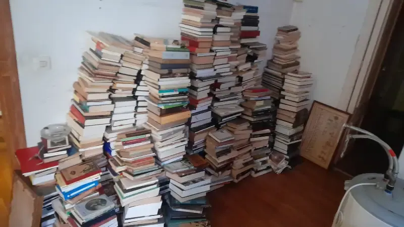
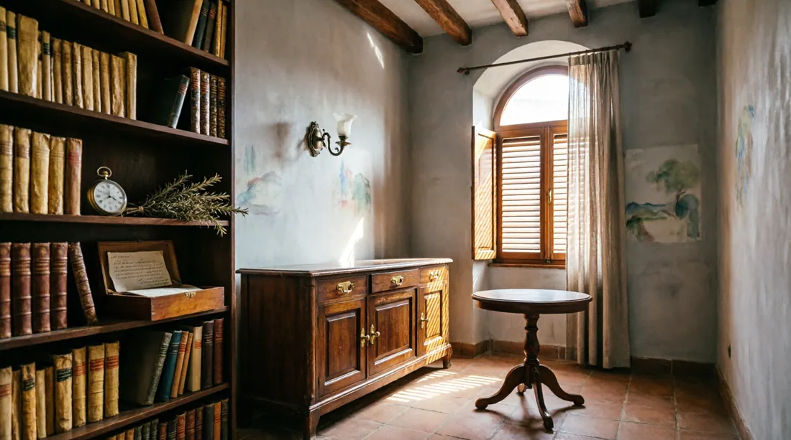

Quan mor un familiar, la gestió de l'herència arriba en un moment de dol i amb una urgència que poques vegades s'anticipa. Les dates dels impostos no esperen l'estat emocional dels hereus, els tràmits davant notaria i Hisenda tenen terminis concrets i les conseqüències de no complir-los són tangibles: recàrrecs del 5% al 20%, possibles sancions i dificultats per disposar dels béns.
Aquesta guia explica el procés complet amb dades verificades a les fonts oficials de Catalunya: l'Agència Tributària de Catalunya (ATC), el Ministeri de Justícia i el Col·legi de Registradors de la Propietat. Sense dades inventades, sense estadístiques fictícies.
Aquesta guia és orientativa i informativa. Cada herència té les seves particularitats. Per al vostre cas concret, consulteu sempre amb un notari, advocat especialitzat o gestoria amb experiència en dret successori català. El dret català (Codi Civil de Catalunya) té diferències significatives respecte al dret civil comú espanyol.
Catalunya i el seu dret successori propi
Catalunya té el seu propi dret civil en matèria de successions, regulat principalment pel Codi Civil de Catalunya (Llei 10/2008 i modificacions posteriors). Això té implicacions pràctiques rellevants respecte al dret civil comú espanyol:
- Legítima reduïda: A Catalunya, la legítima (la part mínima que correspon als fills i pares) és només la quarta part del total de l'herència. En el dret comú espanyol pot arribar al terç o dos terços. Això dóna més llibertat al testador català per distribuir els seus béns.
- Pactes successoris: Catalunya permet pactes successoris entre vius (com els «heretaments» o transmissions anticipades de béns), que no existeixen en el dret comú.
- Acceptació i repudiació: L'article 461-12 del Codi Civil de Catalunya regula la «interrogatio in iure»: qualsevol interessat pot requerir al notari perquè commini el cridat a heretar a manifestar si accepta o repudia en un termini de 2 mesos. Si no respon, s'entén repudiada.
- Impost de Successions: La gestió correspon a l'Agència Tributària de Catalunya (ATC), amb normativa pròpia (Llei 19/2010 i posteriors modificacions).
La normativa catalana s'aplica quan el difunt tenia la seva residència habitual a Catalunya durant la major part dels últims 5 anys abans de la seva mort. Això és independent del lloc de residència dels hereus. Per als hereus residents fora d'Espanya, també s'aplica la normativa catalana si el causant residia aquí.
Documentació necessària: llista completa i on aconseguir-la
Abans d'iniciar qualsevol tràmit davant notaria o Hisenda, cal reunir la documentació bàsica. Sense aquests documents no es pot avançar en el procés:
Certificat de Defunció
Document que acredita la defunció. És el primer pas i el que desbloqueja tots els altres tràmits.
On: Registre Civil del lloc de defunció o del domicili del difunt. També a mjusticia.gob.es
Termini: Disponible immediatament després de la inscripció de la defunció
Certificat d'Últimes Voluntats
Indica si el difunt va atorgar testament i davant de quin notari està dipositat. És imprescindible encara que la família tingui còpia del testament.
On: Ministeri de Justícia — mjusticia.gob.es — Seu electrònica
Termini: Sol·licitar-lo mínim 15 dies hàbils després de la defunció
Testament (còpia autoritzada)
Si hi ha testament, la còpia autoritzada s'obté a la notaria indicada pel Certificat d'Últimes Voluntats. Sense testament, cal tramitar declaració d'hereus abintestat.
On: Notaria corresponent (indicada al Certificat d'Últimes Voluntats)
Nota: Només el poden sol·licitar els hereus que figurin al certificat
Certificats de saldo bancari
Acreditació del saldo de tots els comptes, dipòsits i productes financers a la data de defunció. Necessari per a l'inventari.
On: Cada entitat bancària on el difunt tingués comptes. Comuniqui-ho amb el certificat de defunció
Important: El banc bloquejarà els comptes fins que s'acrediti la titularitat hereditària
Documentació d'immobles
Escriptures de propietat i notes simples del Registre de la Propietat de cada immoble heretat. La nota simple mostra càrregues, hipoteques i inscripció actual.
On: Registre de la Propietat — registradores.org (nota simple online)
També: IBI (Cadastre) per al valor cadastral a efectes de l'impost
Assegurances de vida
El Registre de Contractes d'Assegurances de Cobertura de Defunció permet saber si el difunt tenia alguna assegurança de vida. Les assegurances tributen també en l'Impost de Successions.
On: Ministeri de Justícia — mjusticia.gob.es — Registre d'Assegurances
Termini: Sol·licitar-lo juntament amb el Certificat d'Últimes Voluntats

El procés complet pas a pas
-
1
Obtenir els documents previs (primeres 3 setmanes)
Els primers dies després de la defunció s'han de dedicar a obtenir els tres documents que desbloquegen tot el procés: certificat de defunció, certificat d'últimes voluntats i, si hi ha testament, la còpia autoritzada.
- Certificat de defunció: Registre Civil, disponible immediatament
- Certificat d'últimes voluntats: sol·licitar al Ministeri de Justícia passats 15 dies hàbils de la defunció
- Còpia del testament: notaria indicada pel certificat d'últimes voluntats
- Si no hi ha testament: iniciar declaració d'hereus abintestat davant notari
-
2
Inventari complet de béns i deutes
És fonamental abans d'acceptar l'herència saber exactament què s'hereta: actius i passius. Aquest inventari és la base per calcular l'impost i per decidir si s'accepta de forma pura o a benefici d'inventari.
- Immobles: escriptures, notes simples del Registre de la Propietat, valors cadastrals (IBI)
- Comptes bancaris: certificats de saldo a data de defunció de cada banc
- Vehicles: permís de circulació, fitxa tècnica
- Assegurances de vida: pòlisses i certificats de la companyia asseguradora
- Deutes: hipoteques pendents, préstecs, factures, deutes amb Hisenda o Seguretat Social
- Altres actius: accions, fons d'inversió, participacions socials
-
3
Acceptació o renúncia davant notari
Amb l'inventari fet i abans que vencin els terminis fiscals, els hereus han de decidir si accepten o renuncien a l'herència. Aquesta decisió es formalitza davant notari.
Acceptació pura i simple: l'hereu assumeix tots els béns i tots els deutes sense límit. Si els deutes superen els actius, l'hereu respon amb el seu propi patrimoni personal.
Acceptació a benefici d'inventari: la responsabilitat de l'hereu queda limitada al valor dels béns heretats. Els deutes del difunt no poden reclamar el patrimoni personal de l'hereu. És l'opció recomanable quan es desconeix l'estat real dels deutes.
Renúncia (repudiació): escriptura notarial de renúncia. L'herència passa al següent hereu segons el testament o la llei.
Tràmit davant notari -
4
Liquidació de l'Impost de Successions — Models 650 i 660
Termini: 6 mesos des de la defunció. Aquest és el termini més important de tota l'herència. Superar-lo sense haver sol·licitat pròrroga genera recàrrecs del 5% al 20% i possibles sancions. La gestió es realitza davant l'Agència Tributària de Catalunya (ATC).
- Model 660: declaració de successions amb tots els béns i hereus
- Model 650: autoliquidació individual de cada hereu (un per hereu)
- Presentació telemàtica a la seu electrònica de l'ATC (amb certificat digital) o presencial a les seves oficines
- Si es necessita més temps: sol·licitar pròrroga de 6 mesos dins dels primers 5 mesos del termini (amb interessos de demora, aprox. 3,75% el 2026)
-
5
Plusvàlua Municipal (si hi ha immobles urbans)
Si l'herència inclou béns immobles urbans, cal liquidar també l'Impost sobre l'Increment de Valor dels Terrenys de Naturalesa Urbana (plusvàlua municipal) davant l'ajuntament on s'ubiquen els immobles. Termini: 6 mesos (prorrogable altres 6).
Per a immobles a Barcelona: Ajuntament de Barcelona — Hisenda. L'ajuntament disposa de calculadora en línia per estimar l'import.
Termini: 6 mesos, prorrogable altres 6 -
6
Escriptura d'acceptació i partició davant notari
Amb els impostos pagats, els hereus formalitzen la distribució dels béns mitjançant escriptura pública d'acceptació i adjudicació d'herència davant notari. Si hi ha diversos hereus, aquest és el moment d'acordar qui rep cada bé o el repartiment del valor.
- Si hi ha un únic hereu: escriptura d'acceptació i adjudicació d'herència
- Si hi ha diversos hereus d'acord: quadern particional amb repartiment acordat
- Si no hi ha acord: es pot nomenar un comptador-partidor o sol·licitar la divisió judicial
-
7
Inscripció al Registre de la Propietat (si hi ha immobles)
Si l'herència inclou béns immobles, l'últim pas és inscriure el canvi de titularitat al Registre de la Propietat. Per fer-ho cal presentar: l'escriptura d'adjudicació, els justificants de pagament de l'Impost de Successions i de la Plusvàlua Municipal. Sense inscripció registral, l'hereu no pot vendre, hipotecar ni llogar legalment l'immoble.
Registre de la Propietat de Barcelona: registradores.org
Pas final: sense ell no es pot disposar de l'immoble
Terminis crítics de l'herència d'un cop d'ull
L'Impost de Successions a Catalunya: el que realment es paga
L'Impost sobre Successions i Donacions a Catalunya està regulat per la Llei 19/2010 i gestionat per l'Agència Tributària de Catalunya (ATC). El seu càlcul és més complex que en altres comunitats i el resultat final depèn de múltiples factors: parentiu, valor heretat, patrimoni preexistent de l'hereu i quines reduccions s'apliquen.
Els quatre grups de parentiu
| Grup | Qui inclou | Reducció base | Bonificació quota |
|---|---|---|---|
| Grup I | Fills i descendents menors de 21 anys | 100.000€ + 12.000€ per any menys de 21 (màx. 196.000€) | 99% fins a 100.000€ |
| Grup II | Cònjuge/parella estable, fills ≥21 anys, ascendents (pares, avis) | 100.000€ (cònjuge i fills) / 50.000€ (resta Grup II) | Cònjuge: 99% · Fills ≥21: esglaonada des del 60% |
| Grup III | Germans, nebots, tiets, sogres, gendres, joves | 8.000€ | 10–20% (esglaonada) |
| Grup IV | Cosins, estranys, parents de 4t grau o més | Sense reducció | Sense bonificació |
Tarifa de l'impost (trams de la base liquidable)
| Base liquidable fins a | Tipus de gravamen |
|---|---|
| 50.000 € | 7 % |
| 100.000 € | 11 % |
| 200.000 € | 15 % |
| 400.000 € | 19 % |
| 800.000 € | 23 % |
| Més de 800.000 € | 25 % (i fins a 32% en trams superiors) |
Reduccions més importants a aplicar
- Habitatge habitual del difunt: reducció del 95% del valor (límit 500.000€ pel conjunt), amb obligació de mantenir-la 5 anys. La poden aplicar cònjuge, fills, pares i col·laterals fins a tercer grau.
- Discapacitat: 275.000€ si la discapacitat reconeguda és ≥33%, o 650.000€ si és ≥65%. Són les reduccions per discapacitat més generoses d'Espanya.
- Majors de 75 anys (Grup II): 275.000€ addicionals.
- Empresa familiar o activitat econòmica: 95% del valor dels elements patrimonials afectes, sota determinades condicions.
L'ATC disposa de programa d'ajuda per calcular els models 650 i 660. També existeixen calculadores independents com la de JM Domínguez o TaxDown que permeten estimar l'import abans de contractar gestoria.
Diferència real amb altres comunitats
Catalunya no és ni la més cara ni la més barata. Per al cònjuge i els fills menors de 21 anys, la bonificació del 99% la fa força favorable. Per als fills majors de 21 anys, la bonificació és del 60% fins a 100.000€ de base imposable i decreix després, cosa que suposa pagar significativament més que a Madrid o Andalusia (on la bonificació és del 99% amb independència de l'import). Per a germans i persones sense parentiu, Catalunya pot ser de les comunitats més gravoses.
Casos pràctics: com varia l'impost segons la situació
Cas A: Fill major de 21 anys hereta pis a Barcelona (habitatge habitual)
Un fill major de 21 anys hereta l'habitatge habitual del seu pare difunt, valorat en 300.000€. S'aplica la reducció del 95% del valor (285.000€), amb la qual cosa la base liquidable queda en 15.000€ menys la reducció per parentiu de 100.000€. En aquest cas, la base liquidable resultant podria ser pràcticament zero o molt reduïda. El pis s'ha de mantenir durant 5 anys.
Condició essencial: que l'immoble fos efectivament l'habitatge habitual del difunt i que l'hereu es comprometi a no transmetre'l durant 5 anys.
Cas B: Cònjuge hereta pis i comptes bancaris
El cònjuge hereta una herència de 400.000€ (pis + comptes bancaris). Amb la reducció de 100.000€ per parentiu i la bonificació del 99% de la quota tributària per a cònjuges, l'impost real a pagar és molt reduït. Aquesta és la situació més favorable del sistema català, juntament amb la dels fills menors de 21 anys. S'aplica igualment a les parelles estables inscrites.
Cas C: Germà hereta pis i diners
Un germà hereta un pis de 180.000€ (no és habitatge habitual del difunt) i 20.000€ en comptes, total 200.000€. Només pot aplicar la reducció de 8.000€ per parentiu (Grup III). La base liquidable queda en 192.000€. Sense la bonificació del 99% que tenen cònjuge i fills, l'impost pot resultar molt significatiu. En aquests casos, l'assessorament fiscal és especialment important per detectar altres possibles reduccions aplicables.
Errors més costosos en la gestió d'herències
-
No respectar el termini de 6 mesos de l'impost de successions
És l'error més habitual i més costós. Superar el termini sense haver sol·licitat pròrroga genera recàrrecs del 5% al 20% segons el retard. A més, sense el justificant de pagament no es pot inscriure cap bé immoble al Registre de la Propietat.
✓ Si necessiteu més temps, sol·liciteu la pròrroga en els primers 5 mesos. Model S05 a l'ATC. -
Acceptar herència pura i simple sense inventariar els deutes
Si el difunt tenia deutes ocults (amb Hisenda, Seguretat Social, préstecs no comunicats), l'hereu que accepta de forma pura i simple respon amb el seu propi patrimoni. Hi ha casos d'hereus que han hagut de fer front a deutes que desconeixien.
✓ Si no es té certesa sobre els deutes del difunt, sempre acceptar a benefici d'inventari. -
No aplicar la reducció per habitatge habitual
La reducció del 95% del valor de l'habitatge habitual (fins a 500.000€) pot suposar un estalvi fiscal molt important i molts hereus no l'apliquen per desconeixement. La condició és mantenir l'immoble durant 5 anys i no vendre'l abans.
✓ Verificar sempre si l'immoble qualifica com a habitatge habitual del difunt. Consulteu a l'ATC. -
Repartir els béns abans de liquidar els impostos
L'adjudicació formal dels béns s'ha de fer després de pagar els impostos corresponents. Repartir abans pot generar problemes fiscals i complicacions al Registre de la Propietat.
✓ Ordre correcte: inventari → acceptació → impostos → escriptura d'adjudicació → Registre de la Propietat. -
No sol·licitar el Certificat d'Últimes Voluntats abans d'actuar
Actuar basant-se en un testament familiar sense verificar que sigui l'últim pot portar a tramitar l'herència sobre un document no vàlid. El difunt pot haver atorgat un testament posterior que l'anul·li.
✓ Sol·licitar sempre el Certificat d'Últimes Voluntats al Ministeri de Justícia abans de qualsevol gestió.

El buidatge del pis heretat: quan i com
Si l'herència inclou un immoble amb mobiliari i paraments, el buidatge del pis és un pas pràctic que condiciona directament la velocitat i el preu de la venda o del nou lloguer. No és un tràmit legal, però té implicacions econòmiques concretes.
¿Abans o després de la venda?
En gairebé tots els casos, buidar el pis abans de publicar l'anunci és més eficient. Un pis buit es fotografia millor, sembla més ampli, permet al comprador visualitzar el seu propi projecte i redueix significativament les objeccions durant les visites. Els pisos buits amb neteja posterior es venen abans i permeten justificar millor el preu de mercat.
Què fer amb els objectes personals del difunt?
Abans de contractar cap servei de buidatge, és important que tots els hereus estiguin d'acord sobre quins objectes es conserven i quins es retiren. En casos d'herència amb diversos hereus, la documentació fotogràfica completa durant el buidatge protegeix a tots davant de possibles reclamacions posteriors sobre objectes concrets.
Pot fer-ho la família sola?
Sí, quan el pis té poc contingut o hi ha disponibilitat i temps. Una empresa professional té sentit quan el pis té molt contingut acumulat, el termini és ajustat, els hereus no resideixen a Barcelona o simplement no hi ha capacitat personal per gestionar el procés. Una empresa autoritzada facilita també el certificat de gestió de residus de l'Agència de Residus de Catalunya, que protegeix el propietari.
El nostre paper en herències: el buidatge de l'immoble
VaciadoDePisos.cat treballa habitualment amb hereus i administradors de finques que necessiten buidar el pis d'un familiar difunt. El procés que seguim:
- Visita gratuïta amb documentació fotogràfica completa de l'estat del pis abans de tocar res
- Pressupost tancat per escrit amb detall de què es retira i què es conserva segons les indicacions dels hereus
- Coordinació amb els hereus sobre objectes de valor o documents que s'han de preservar
- Certificat de gestió de residus de l'ARC en finalitzar
No gestionem tràmits notarials ni fiscals — això ho ha de fer un advocat o gestoria especialitzada. El que fem és la part física: deixar l'immoble buit, net i llest per al seu següent ús.
Zona de cobertura
Necessiteu buidar el pis d'un familiar difunt?
Visita gratuïta i pressupost tancat. Treballem amb hereus a tota l'àrea metropolitana de Barcelona, amb la màxima sensibilitat i discreció.
Preguntes freqüents sobre herències a Barcelona
El termini per presentar i pagar l'Impost de Successions (model 650) és de 6 mesos des de la defunció, segons l'Agència Tributària de Catalunya (ATC). Es pot sol·licitar pròrroga d'altres 6 mesos, però només dins dels primers 5 mesos. La pròrroga comporta interessos de demora (aprox. 3,75% el 2026). Per a la plusvàlua municipal, el termini és també de 6 mesos, prorrogable altres 6.
Depèn del parentiu i del valor heretat. Els cònjuges i parelles estables apliquen una bonificació del 99% (pràcticament no paguen). Els fills menors de 21 anys: bonificació del 99% fins a 100.000€. Els fills majors de 21 anys: bonificació decreixent des del 60% que baixa progressivament. La tarifa va del 7% (fins a 50.000€ de base liquidable) al 32%. Hi ha reduccions importants com el 95% per habitatge habitual. Calculeu el vostre cas a atc.gencat.cat.
Els imprescindibles són: (1) Certificat de defunció (Registre Civil), (2) Certificat d'Últimes Voluntats (Ministeri de Justícia, després de 15 dies hàbils de la defunció), (3) Còpia autoritzada del testament o acta de declaració d'hereus abintestat si no hi ha testament, (4) Inventari de béns: notes simples del Registre de la Propietat, certificats bancaris a data de defunció, i (5) DNI d'hereus i difunt.
L'acceptació a benefici d'inventari limita la responsabilitat de l'hereu als béns heretats, sense que els deutes del difunt afectin el seu patrimoni personal. És especialment recomanable quan no es coneix amb exactitud l'estat dels deutes del causant. Es tramita davant notari. L'alternativa, l'acceptació pura i simple, fa l'hereu responsable també amb el seu propi patrimoni.
No presentar sense pròrroga genera recàrrecs del 5% al 20% segons el retard. Si hi ha ocultació, les sancions poden arribar al 50%–150% de la quota. A més, sense el justificant de pagament no es pot inscriure cap bé immoble al Registre de la Propietat, cosa que bloqueja la venda o hipoteca.
Sí. La renúncia es formalitza mitjançant escriptura notarial de repudiació. L'herència passa al següent cridat per testament o per llei. La renúncia no pot ser parcial: es renuncia a la totalitat. Segons l'article 461-12 del Codi Civil de Catalunya, si un cridat no es pronuncia després de ser requerit per notari, s'entén que repudia en el termini de 2 mesos.
Quan el difunt no va deixar testament, cal tramitar la declaració d'hereus abintestat davant notari. A Catalunya, l'ordre d'hereus legals és: fills i descendents primer; en defecte d'això, cònjuge o parella estable; en defecte d'això, pares i ascendents; després germans i nebots; i finalment, a falta de tots, la Generalitat de Catalunya.
Sí, si hi ha béns immobles urbans. L'Impost sobre l'Increment de Valor dels Terrenys de Naturalesa Urbana (plusvàlua) es paga a l'Ajuntament on s'ubiqui l'immoble en un termini de 6 mesos des de la defunció (prorrogable altres 6). Per a immobles a Barcelona: Ajuntament de Barcelona — Hisenda.
Cònjuge i parella estable: 99% de la quota. Fills <21 anys: 99% fins a 100.000€. Fills ≥21 anys: bonificació decreixent des del 60%. Reducció per habitatge habitual: 95% del valor (fins a 500.000€), mantenint 5 anys. Discapacitat: 275.000€ (≥33%) o 650.000€ (≥65%). Tots els detalls a atc.gencat.cat.
És obligatòria quan hi ha béns immobles. Sense inscripció, l'hereu no pot vendre, hipotecar ni llogar legalment l'immoble. Es realitza després de l'acceptació notarial i el pagament dels impostos (successions + plusvàlua). Cal l'escriptura d'adjudicació i els justificants de pagament. Registre de la Propietat: registradores.org.
Qualsevol hereu pot sol·licitar la divisió judicial de l'herència. A Catalunya, el Codi Civil de Catalunya regula aquest procés. També existeix la possibilitat que el testador hagi nomenat un comptador-partidor per fer la partició. La mediació extrajudicial és freqüentment més ràpida i econòmica que la via judicial en conflictes hereditaris.
La legítima a Catalunya és el dret dels fills (i en defecte d'això, pares) a rebre un mínim del 25% del valor total de l'herència, encara que el testament no els nomeni hereus. És inferior a la legítima del dret civil comú (que pot arribar al terç o dos terços). El legitimari pot exigir-la encara que no estigui esmentat en el testament.
Per concloure: el procés en ordre i sense improvisació
Una herència ben gestionada a Barcelona requereix actuar en ordre, amb els documents correctes i dins dels terminis. L'Impost de Successions davant l'ATC és l'eix fiscal del procés: ignorar el seu termini de 6 mesos és l'error més freqüent i més car.
Per als aspectes jurídics i fiscals, la recomanació sempre és treballar amb un notari, advocat especialitzat o gestoria amb experiència en dret successori català. Per a la part pràctica del pis —buidatge, neteja, preparació per a venda—, és on pot ajudar el nostre equip.